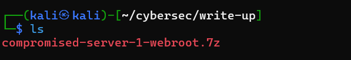
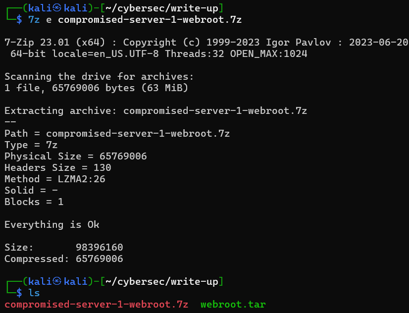
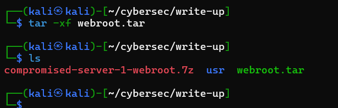
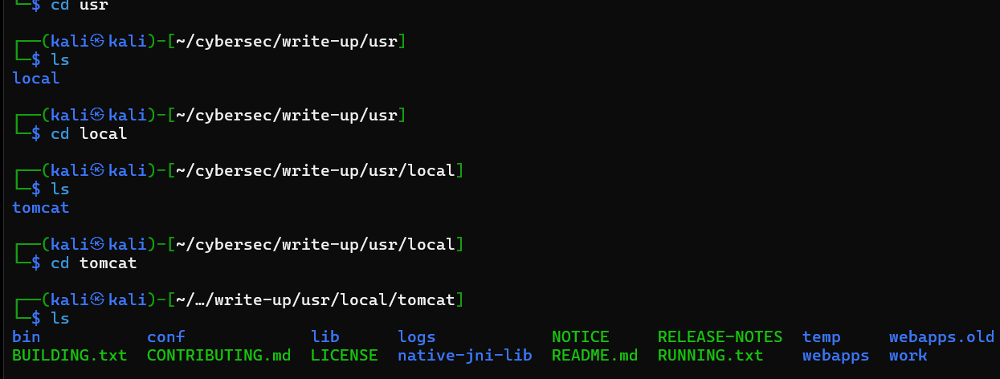
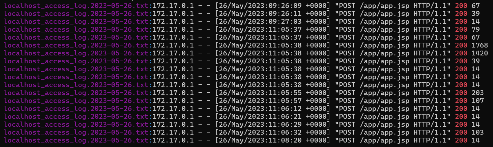
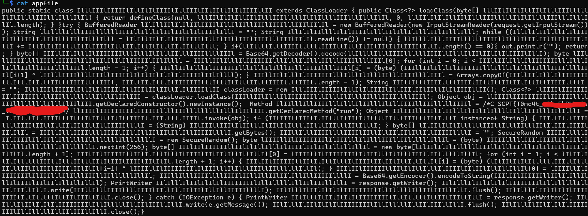

Compromised Server 1 is a challenge powered by CNCS (Centro Nacional de Cibersegurança PORTUGAL)
To start, I downloaded the file that is given to us.
We were given a file with the .7z extension. Files with the .7z extension are compressed archives, similar to .zip or .rar files. To decompress a .7z file we can use the 7z program
A .tar file is an archive format commonly used in Unix and Linux operating systems. It stands for "tape archive," as it was originally designed for tape backups. A .tar file can contain multiple files and directories bundled together, but it does not compress them by default; it only packages them into a single file.
To extract the contents of a webroot.tar file we can do that:
tar -xf webroot.tar
Now a directory /usr has appeared. Let's take a look!
As we can see, the CTF description states that our objective is to understand how and what was executed on the system. This /usr is nothing more than a copy of the webroot directory used by the web server. It is an Apache Tomcat server.
In the /logs directory, we can see some log files. I decided to search only for status code 200 in each of these files. Just using
grep 200 *and I noticed several POST requests to /app/app.jsp with different response sizes. 
let's take a look at this app.jsp file. it's located at /webapps/app/
there's a huge chunk of NOTHING in the file, let's remove these spaces by using
cat app.jsp | tr -d "[:space:]"

we can see a lot of hexa values, so let's use CyberChef to convert the hexadecimal bytes to their original values and let's save the output.
just by reading the content of the file, we obtain the flag:
THE FLAG FORMAT IS CSCPT{}